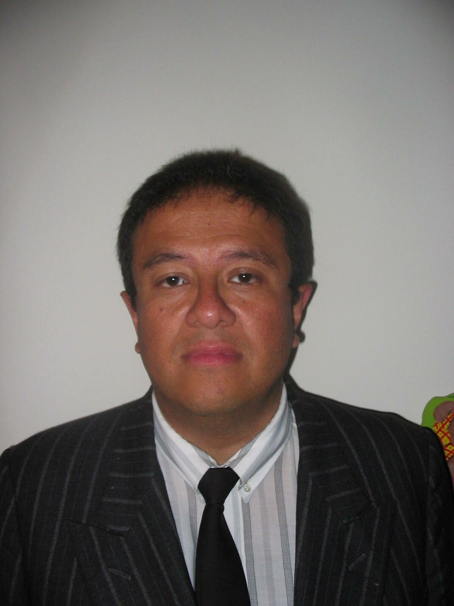

Andres Gilberto Lara Amaya. Ingeniero Electronico
Ingeniero electrónico bilingüe dedicado a investigación, desarrollo e implementación de productos y servicios informáticos en las áreas de logística, sistemas de cómputo y electrónica. Experiencia en las áreas de logística y transporte: Diseño, simulación, optimización, costeo y seguimiento de rutas de transporte urbano y nacional. Desarrollador de software para aplicaciones de logística, control de procesos y procesamiento de datos. Diseñador de sistemas microprocesados, Interfaces, redes de computadores. Experiencia en instalación, mantenimiento y control de plataformas de trabajo de oficina

Estudio desarrollo de aplicaciones web por que su aplicación actual es muy demandada y omnipresente. Al terminar la carrera quiero formar una empresa donde se ofrezcan servicios via internet con un frente al cliente novedoso, atractivo que presente aplicaciones prácticas y rentables.